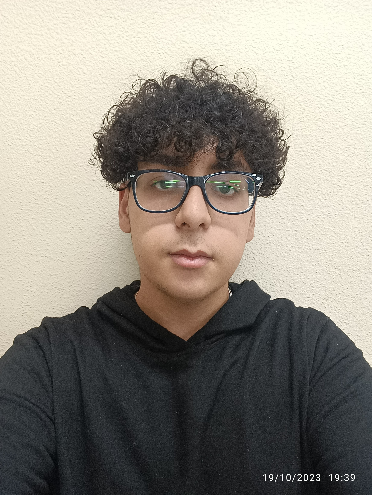

Pagina Principal
Pagina Principal
Curriculm
Formulario
Mi proyecto

Yassin Benjilali Ntifi
Tecnico De Grado Medio en SMR
Madrid-España
yassin.benjilali@educa.madrid.org
+34 643593980
Perfil Profesional
Tecnico De Grado Medio en SMR